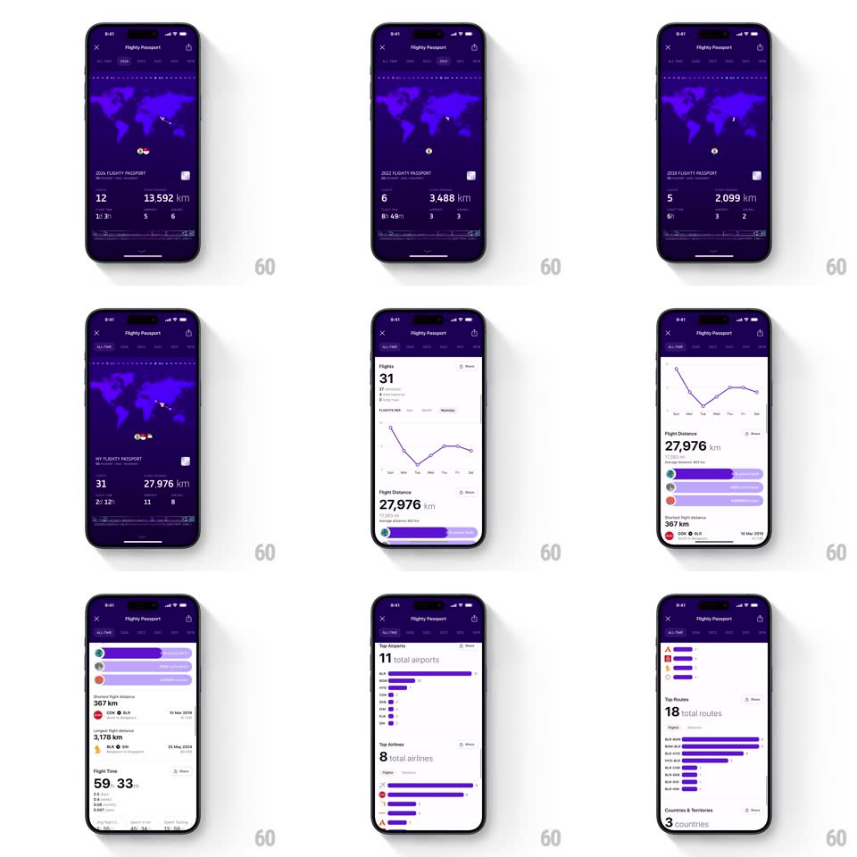

Media
Frame-by-frame

Rebuild this interaction 1:1: Flighty's Passport - a purple flight-recap page with year tabs (ALL TIME, 2023, 2022...) over a dotted world map that redraws route arcs per tab, big stat numbers (flights, km, hours), and a scrollable dashboard of line charts and ranked bar lists.

Rebuild this interaction 1:1: Flighty's Passport - a purple flight-recap page with year tabs (ALL TIME, 2023, 2022...) over a dotted world map that redraws route arcs per tab, big stat numbers (flights, km, hours), and a scrollable dashboard of line charts and ranked bar lists.
## Integration
Integration: stack-agnostic spec - springs given as stiffness/damping, timed motions as duration + curve; map every value to your framework and animation library of choice.
## Scene
Deep purple page, close + share in the header, "Flighty Passport" title, a row of year tabs. A dotted-halftone world map with glowing route arcs. Below: big white stats ("31" flights, "27,976 km", hours, airports). Scrolling reveals white cards: a flights-over-time line chart, horizontal bar rankings, "Top Airports", "Top Airlines", "Top Routes" lists.
## Motion spec
Pattern: tab-driven map redraw + dashboard scroll.
- Tab switch: the active tab's pill slides (spring ~380/22); the old route arcs erase (drawing backward, 300ms) as the new arcs draw on (stroke along the path, 500ms, 80ms stagger between arcs) - the map replays your year.
- Stats re-count on every tab change (digit roll 600ms, all in sync).
- Scroll: the map pins and shrinks slightly (scale 1 -> 0.92, tracking scroll) while stat cards rise over it; each chart card springs in on first reveal (fade + 20px, spring ~340/20).
- The line chart draws itself left-to-right (600ms) with the dot at the head; bar lists grow from zero width (400ms, ease-out, 60ms stagger per bar).
- Rank change between tabs: rows reorder with spring translations (spring ~360/20) - bars physically swap places.
## Calibration
- Arc drawing direction follows flight direction - the map animates departures, not decorations.
- Numbers always roll, never snap - the recap is a story of accumulation.
## Reduced motion
Tabs crossfade map and stats; charts appear complete.
## Don't miss
- The map redraw per tab is the product's magic - a year of your life drawn in half a second.
- Bars animate from ZERO on every reveal - rankings must feel earned.